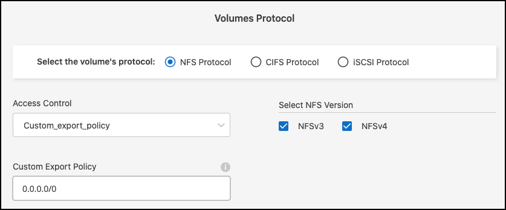
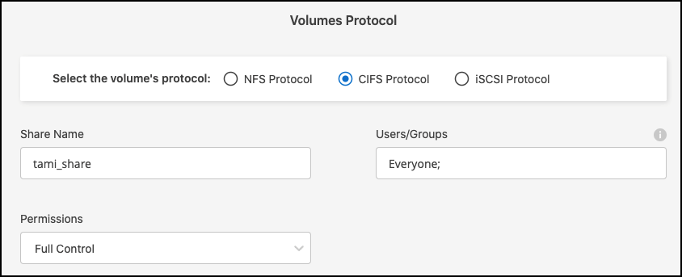
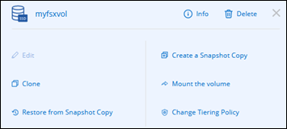

请求文档变更
请求文档变更 在 GitHub 上编辑
在 GitHub 上编辑 提供者指南
提供者指南为适用于 ONTAP 的 Amazon FSX 创建卷
设置工作环境后，您可以为 ONTAP 卷创建和挂载 FSX 。
创建卷
您可以在 Cloud Manager 中从适用于 ONTAP 的 FSX 工作环境创建和管理 NFS 和 CIFS 卷。使用 ONTAP 命令行界面创建的 NFS 和 CIFS 卷也会显示在适用于 ONTAP 的 FSX 工作环境中。
您可以使用 ONTAP 命令行界面， ONTAP API 或 Cloud Manager API 创建 iSCSI 卷，并在适用于 ONTAP 的 FSX 工作环境中使用 Cloud Manager 管理这些卷。
您需要：
-
活动 "AWS 中的连接器"。
-
如果要使用 SMB 、必须设置 DNS 和 Active Directory 。有关 DNS 和 Active Directory 网络配置的详细信息，请参见 "AWS ：使用自管理 Microsoft AD 的前提条件"。
-
打开适用于 ONTAP 的 FSX 工作环境。
-
如果未启用 Connector ，系统将提示您添加一个。

-
单击 * 卷 * 选项卡
-
单击 * 添加卷 * 。

-
* 卷详细信息和保护 * ：
-
输入新卷的名称。
-
Storage VM （ SVM ）字段会根据工作环境的名称自动填充 SVM 。
-
输入卷大小并选择一个单位（ GiB 或 TiB ）。请注意，卷大小将随使用量增长而增加。
-
选择快照策略。默认情况下，每小时（保留最后六个副本），每天（保留最后两个副本）和每周（保留最后两个副本）创建一个快照。
-
单击 * 下一步 * 。

-
-
* 协议 * ：选择 NFS 或 CIFS 卷协议。
-
对于 NFS ：
-
选择访问控制策略。
-
选择 NFS 版本。
-
选择自定义导出策略。单击信息图标以查看有效值条件。

-
-
对于 CIFS ：
-
输入共享名称。
-
输入以分号分隔的用户或组。
-
选择卷的权限级别。

-

如果这是此工作环境中的第一个 CIFS 卷，则系统将提示您使用 Active Directory 或 Workgroup 设置配置 CIFS 连接。 -
如果选择 Active Directory 设置，则需要提供以下配置信息。
字段 Description DNS 主 IP 地址
为 CIFS 服务器提供名称解析的 DNS 服务器的 IP 地址。列出的 DNS 服务器必须包含为 CIFS 服务器将加入的域查找 Active Directory LDAP 服务器和域控制器所需的服务位置记录（ SRV ）。
要加入的 Active Directory 域
希望 CIFS 服务器加入的 Active Directory （ AD ）域的 FQDN 。
授权加入域的凭据
具有足够权限将计算机添加到 AD 域中指定组织单位 (OU) 的 Windows 帐户的名称和密码。
CIFS server NetBIOS name
在 AD 域中唯一的 CIFS 服务器名称。
组织单位
AD 域中要与 CIFS 服务器关联的组织单元。默认值为 cn = computers 。
DNS 域
Storage Virtual Machine （ SVM ）的 DNS 域。在大多数情况下，域与 AD 域相同。
NTP 服务器
选择 * 启用 NTP 服务器配置 * 以使用 Active Directory DNS 配置 NTP 服务器。如果需要使用其他地址配置 NTP 服务器，则应使用 API 。请参见 "Cloud Manager 自动化文档" 了解详细信息。
-
如果选择工作组设置，请输入为 CIFS 配置的工作组的服务器和工作组名称。
-
单击 * 下一步 * 。
-
-
-
* 使用情况配置文件和分层 * ：
-
默认情况下， * 存储效率 * 处于禁用状态。您可以更改此设置以启用重复数据删除和数据压缩。
-
默认情况下， * 分层策略 * 设置为 * 仅 Snapshot * 。您可以根据需要选择其他分层策略。
-
单击 * 下一步 * 。

-
-
* 审阅 * ：查看卷配置。单击 * 上一步 * 以更改设置，或单击 * 添加 * 以创建卷。
此时，新卷将添加到工作环境中。
挂载卷
从 Cloud Manager 中访问挂载说明，以便将卷挂载到主机。
-
打开工作环境。
-
打开卷菜单并选择 * 挂载卷 * 。

-
按照说明挂载卷。